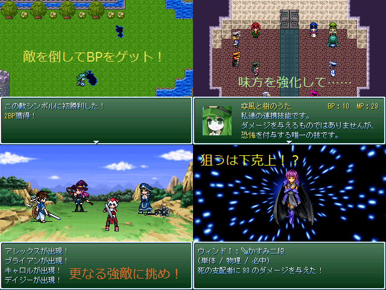

 |
|
| 作者：管理人 | |
| ツクール：2000 | |
| 作者コメント： 玉露軍＋ウィンドⅠが色んな敵と戦うデフォ戦ゲーです。 ・レベルアップの概念は無し ・ステータスや特殊技能に若干のカスタマイズ性 ・ホワイトハウスを除く玉露軍全員がプレイアブル ・……と思いきや最近シアンライブラという新キャラが現れた ・なのでせめてサポートキャラに(ホワイトハウスの仕事奪っただけ) ・ってさらに増えたよ！ またホワイトハウスの仕事が減ったよ！ ・余力があればパンダもどこかで出したい…… ・ボス以外の敵は(多分)全て戦っても良いし無視しても良い ・難易度は中の下～中の上程度のつもりです ・真面目系、パロディ、ネタ戦まで幅広く取り扱います ・全ての戦闘には敗北時のアドバイスを用意 ・何度か安価でアイディア募りました ・ストーリーは極めて薄味 ・方々から設定を物故させていただいています といった感じでお送りします。 |
|
| 管理人コメント： SSやっつけです。遅刻提出できれば御の字です。間に合わなかったら本スレに投下します。 |
|
| ダウンロード(0.00MB) / 感想掲示板 | |